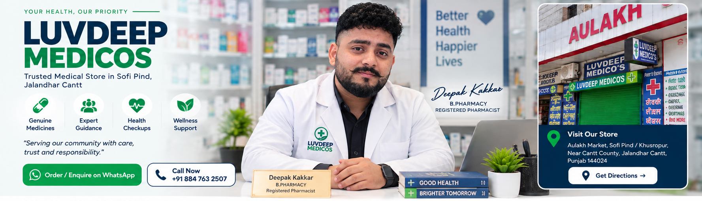
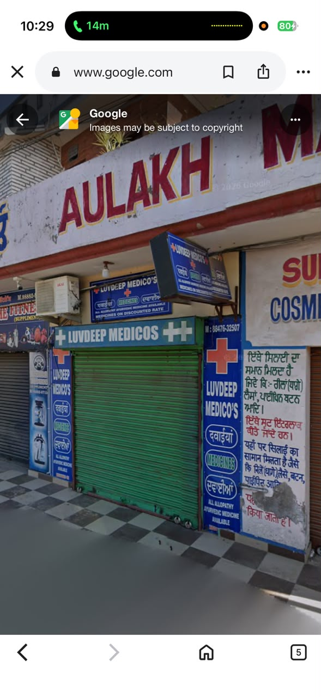
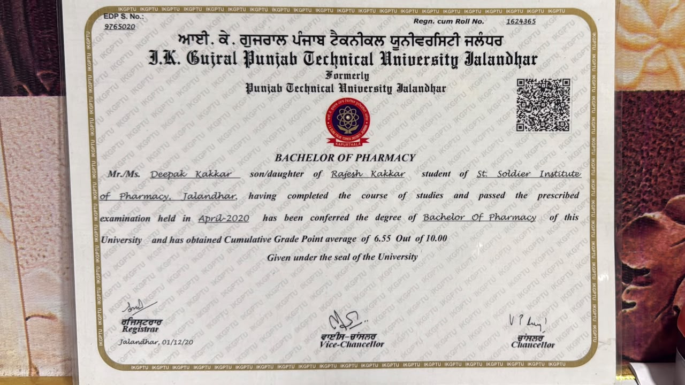
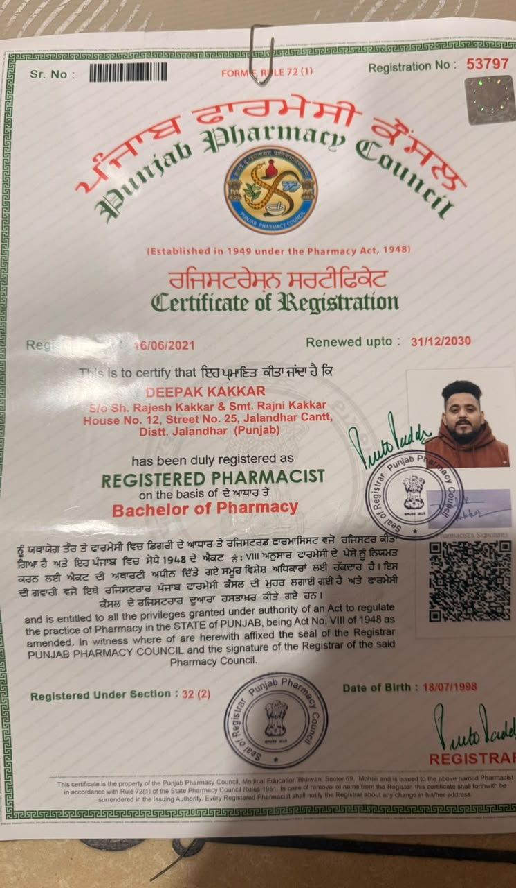

Pain Relief & Fever
Common fever and pain-relief products

Common fever and pain-relief products
Cough, throat and seasonal-care products
Acidity, ORS and digestive essentials
Daily wellness and nutritional support
Bandages, antiseptic and first-aid essentials
Glucose monitoring and basic health devices
Everyday baby and mother-care essentials
Skin, hygiene and personal-care products
Product images are illustrative examples of common pharmacy categories. Availability and brands may vary. Prescription medicines require a valid prescription where applicable.
Deepak Kakkar holds a Bachelor of Pharmacy from I.K. Gujral Punjab Technical University and is registered with the Punjab Pharmacy Council. His registration certificate indicates renewal through 31 December 2030.



📍 Aulakh Market, Sofi Pind / Khusropur, Near Cantt County, Jalandhar Cantt, Punjab 144024